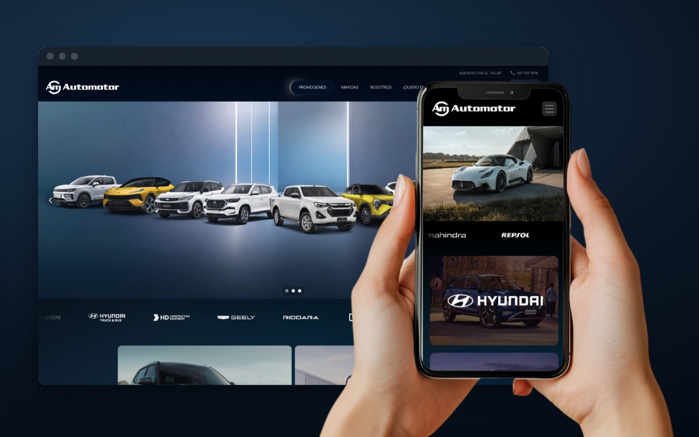
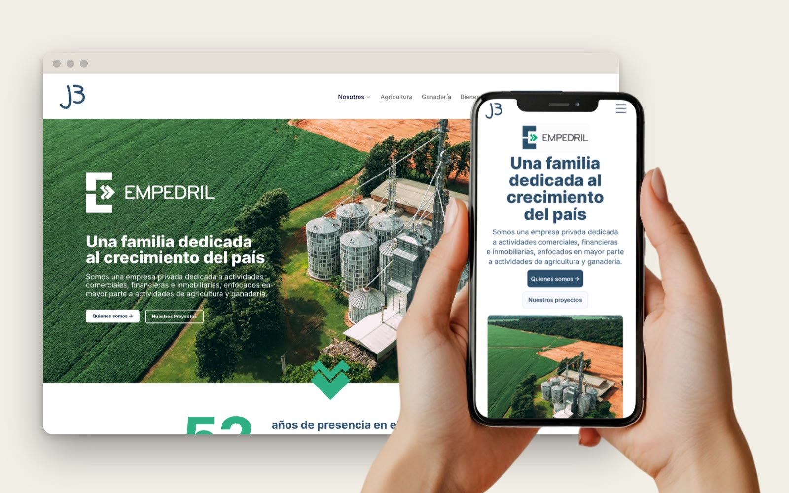

I design brands and ship the websites that carry them.
Identity, packaging, campaigns and broadcast on one side. On the other, websites I design in Figma, then build and launch in Framer myself. Thirteen years, two markets, two languages.
Open to full-time roles, hybrid or remote. U.S. permanent resident, no sponsorship needed.

Selected work
Brand and digital, six projects
Nine vehicle brands, rebuilt around what each visitor came to do.
View project →
A pay-per-view campaign system, from countdown to fight night.
View project →
A label system that lets 22 designs cover 44 SKUs.
View project →
A 1971 agro group, presented as one family.
View project →Launching a digital bank across screens, cards and billboards.
View project →
One weekly package, a new guest cast every episode.
View project →01 · Ask who arrives
Every project starts by mapping who lands here against what they came to do. On Automotor that surfaced three groups with almost nothing in common.
02 · Send the hard questions back
Structural questions go to the client before any screen exists, because the answer changes the navigation. Two of them reshaped the Automotor menu.
03 · Own it to production
A live site I built myself, a coffee line on the shelf, a launch on every screen in town. I’m accountable for how it works in the world, not just in the file.
About me
Packaging and 3D renders early on, then brand systems and national campaigns at agencies in Asunción. After that came two years as senior designer at ueno Bank, then broadcast design in California at Malka Media. Now I design and ship websites end to end, and I still do the brand work.
That path wasn’t a detour. Industrial design taught me to work inside real constraints. A master’s in art direction taught me to hold a whole system in view at once. Campaign work taught me to make something land in three seconds.
I work in English and Spanish, and most of my career has meant translating between markets as much as between languages.
What I do
Hiring someone who can design the brand and get the site live?
Austin, Texas · hybrid or remote · full-time · English & Español. I reply the same day.